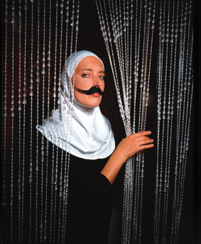

| September 2003 |
| Skab dig | |
| tema: | I skabet |
| Gritt Uldahl |
 |
Som afviger fra den heteroseksuelle norm kender jeg
til flere forskellige skabe at opholde sig i. For at blive ved metaforen
”skabet”, så udgør de omtrent et helt møbelhus.
For flere år siden bestemte jeg mig for at forsøge at have
en så åben og eksperimenterende tilgang som muligt til min
seksualitet. Jeg begyndte blandt andet at være sammen med andre
kvinder; noget som altid havde figureret som et ønske, men som
endnu ikke havde fået et konkret udtryk. Det var umiddelbart ikke
vanskeligt at komme ud af heteroskabet og stå frem som en, der levede
lesbisk. Mine daværende heteroseksuelle mandlige venner syntes ligefrem
det var ”spændende”, ”eksotisk” og ”direkte
pirrende”. Lesbisk seksualitet, som en heteroseksuel mand forestiller
sig den, er fortsat en af hans hyppigst forekommende seksuelle fantasier.
Mine daværende heteroseksuelle veninder ængstedes dog ved
nyheden. Mon mit blik på dem nu ville undergå en forandring?
Måske jeg havde været forelsket i dem hele tiden, men først
nu havde erkendt det? Ville jeg fremover forgribe mig på dem? I
det homoseksuelle miljø fandt jeg hurtigt ud af, at det ikke var
særligt populært at have en heteroseksuel fortid. Som femme
i det lesbiske mainstream miljø følte jeg mig ydermere marginaliseret,
udgrænset og nærmest usynlig. Jeg levede ikke op til den stereotype
forestilling om, at en lesbisk altid ifører sig maskuline kønnede
koder som korthårs frisure, skjorte og bukser. Men det egentlige
problem opstod først senere, da jeg prøvede at finde en
dækkende kategori at høre ind under.
Jeg betegner ikke mig selv som lesbisk. Det hører til sjældenhederne, at en mand er attraktiv for mig. Men når han potentielt set kan være det, udleder jeg, at jeg ikke kan betegne mig selv som lesbisk. At benytte en kategori som biseksuel opererer med en dualisme, som er begrænsende på en anden måde. Jeg synes nemlig ikke, at jeg er hverken ”det ene” eller ”det andet” eller ”både og” men ”og-, og-, og-”. Måske kan kategorien ikke-heteroseksuel bruges for sådan en som mig ? Nye ord kommer hele tiden til som polyamorous, shape shifter, fairies etc. Jeg tager gerne prøvende kategorien queer på mig. Som queer har jeg af forskellige lesbiske løbende fået stillet spørgsmålet ”hvorfor jeg dog ikke ville kalde mig for lesbisk, når jeg nu ofte lever lesbisk?.” Nogle vil betegne mit undvigende svar som et udtryk for stadigvæk at være i heteroskabet. Jeg er klar over, at det er nødvendigt af politiske årsager i et heteronormativt samfund at italesætte, når man lever lesbisk. Men som tidligere beskrevet er kategorien lesbisk ikke dækkende for mit følelsesliv.
Når jeg som queer er sammen med en anden kvinde i et lesbisk forhold, tager jeg politisk stilling til at have organiseret mit kærlighedsliv på en måde, der fortsat udgør en trussel for den gældende heteroseksuelle norm. Heterosexisme kommer til udtryk på mange måder. Jeg gemmer mig i den forbindelse ikke væk i noget queerskab, når jeg selv oplever eller i øvrigt er vidne til heterosexisme. Kampen for at leve som homoseksuel uden at blive diskrimineret herfor og med de samme rettigheder som for de heteroseksuelle, er også min kamp. Det angår alle. Det er et samfundsanliggende i frihedens navn. Jeg er igennem de sidste år gået ud og ind af et utal af skabe. Det er blandt andet igennem disse erfaringer med ”at være i skabet” og ”at være ude af skabet”, at man ”skaber” sig selv og bliver til som subjekt. Når man synliggør sin afvigerposition og kæmper for at være, som man er, og gør sig fri af den gældende samfundsnorm, bliver der mere plads. Til en selv. Til et samfund med rummelighed for forskelligheder. Det er et kontinuerligt projekt at være opmærksom på, hvordan den gældende heteroseksuelle norm dikterer måden at organisere sig på i et kærlighedsforhold, og hvordan denne aktivt virker ind i ens liv og kan få en til at føle sig fremmedgjort over for det, som man gerne vil.
Hvis forestillingen om EN ENESTE RIGTIG måde at praktisere kærlighed på blev afviklet, så ville det grundlæggende forandre verden og de vilkår, som også jeg som queer, en gruppe, der i flere henseender er både udgrænset og marginaliseret, lever under.
Reference:
www.panbladet.dk/artikel/99
Print denne side